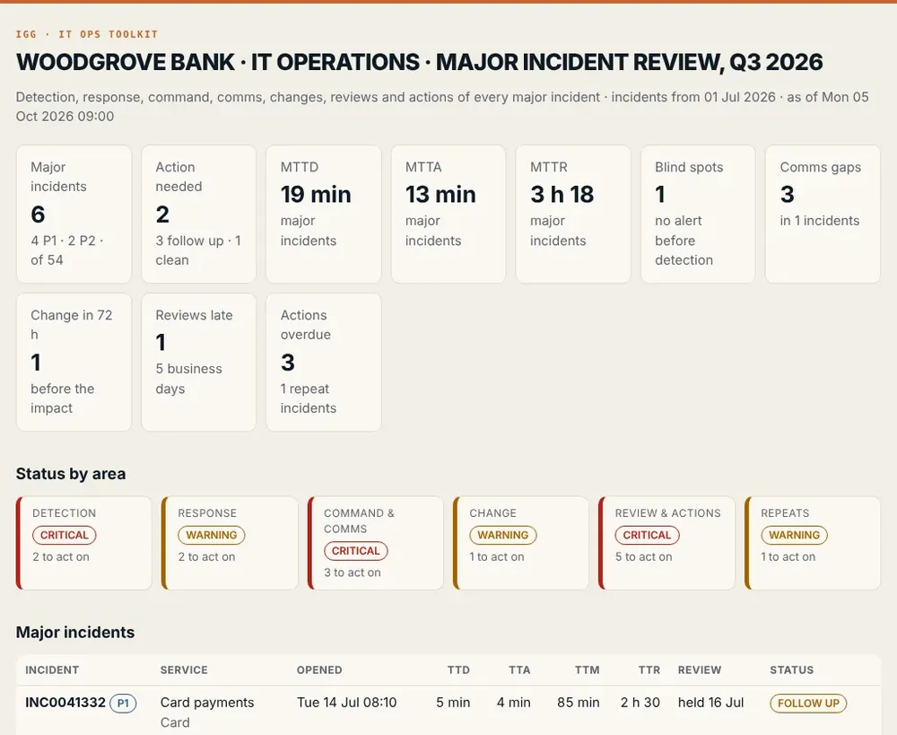

In the example the post starts from, the service desk had dozens of calls about logins before anyone in IT knew, and no alert fired until well after detection. An alert on the payments queue fired at ten past two and nobody acted until three. Those are the gaps the major incident kit published with this post is built to measure. It is an open-source tool that runs on demo data from the IT operations team of a made-up bank over one quarter: 54 incidents, six of them major, on card payments, online banking, trader voice, the mobile API, the payments hub and market data, with the problems placed on purpose.
The post-incident review is usually written a week later, from memory, by the person busiest on the bridge, and by then the timeline is a guess. The kit rebuilds it from the ITSM tool, the monitoring consoles, the bridge chat and the sent folder. It compares the first alert on the service or CI, the configuration item affected, with the first user report and the ticket, and marks blind spots and alerts nobody acted on.
An hour and a half without an update for the trading desk
In the same example, the trading desk went an hour and a half without an update and never got the resolution notice. The kit checks for an update every N minutes as the policy says, and flags a late first update, the gaps and a missing resolution notice. It also measures time to acknowledge, mitigate and resolve against each priority's targets.
The change the night before, missing from the ticket
The change the night before was the cause, and the ticket does not say so. The kit lists changes on the service in the 72 hours before the impact, late reviews, the root cause in the problem record, overdue actions and incidents back on the same CI within 30 days. The action that would have caught the login outage is a month overdue.
The output is a web report with a timeline per incident, a draft review per major incident with the parts only people can write clearly marked, and CSV files with MTTD, MTTA, MTTM and MTTR, the mean times to detect, acknowledge, mitigate and resolve. A start command prints the role card and the first-fifteen-minutes checklist.
How to use it with real data
A read-only PowerShell exporter reads ServiceNow and Jira Service Management. It runs on Python with the standard library only, with 15 tests and a runbook. The suggested start is last quarter's real exports, tuning the targets with the major incident managers.
Where it comes from
The tool comes from leading the technical response in major incidents and the post-mortems that followed, and from owning the incident, change and problem processes. One was the outage of a voice line used by a trading desk at a financial services firm: the fix was technical, but what the desk remembered was how often they heard from us. An update with nothing new is still an update.
Want to bring it to your environment or adapt it to your case? Get in touch and we can look at it together.
Tech Career Lab · newsletter
Found this useful? Every two weeks I send one practical idea for IT professionals: LinkedIn, projects, networking and hiring processes.
Sign up and get the 33 ideas →